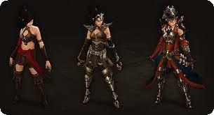

Чародей — один из шести классов в игре Diablo III. Этот класс близок Волшебнице из Diablo II. Кредо класса
— активное использование магии стихий: огня, льда, молнии и тайной магии (в оригинале - arcane). Примечательно,
что чародей не пользуется стихией света, ядом и физическим уроном.
Чародеи — заклинатели-бунтари, которые, не в пример своим более осторожным в обращении с магией собратьям,
используют как проводники для магической энергии собственное тело. Они управляют магическими силами и крушат,
сжигают и замораживают врагов. Более того, они управляют временем и светом и могут создавать иллюзии и миражи,
телепортироваться и отражать атаки.
Чародей пользуется посохами и жезлами для фокусировки слабых заклинаний; пока же врагов сжигает магическое пламя,
он концентрируется на могущественных заклинаниях тайной магии, способных стереть любого противника с лица земли.
Почти все атаки чародеев ведутся на расстоянии. Это позволяет чародею находиться в относительной безопасности и
соответствует его роли «живой артиллерии».